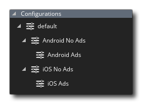

 En raison des exigences de développement multiplateforme et de la nécessité d'un produit disponible et personnalisé pour différents clients et / ou appareils, GameMaker Studio 2 inclut des configurations pour simplifier les choses. Grâce à ce système, vous pouvez basculer rapidement entre différents écrans de démarrage, icônes et fichiers inclus et tester ou exporter uniquement ceux qui sont pertinents pour la plate-forme ou le client cible, à partir du même code de base.
Pour configurer vos configurations, il est recommandé de préparer d'abord une configuration "par défaut" en incorporant tous les éléments configurables du projet dans GameMaker Studio 2, y compris les icônes et les écrans de démarrage (effectués via les options de jeu ), les fichiers inclus et les extensions vous pouvez avoir besoin, et vous pouvez également aller et modifier les propriétés de sortie pour les ressources sonores ou les paramètres de groupe de texture et de nombreuses autres options... Presque tout ce qui peut être configuré dans l'EDI sera stocké dans la configuration actuellement sélectionnée.
Une fois que vous avez configuré la configuration par défaut, vous pouvez en ajouter un nouveau à l'arborescence des ressources en cliquant avec le bouton droit de la souris.  dans le dossier des configurations et en sélectionnant Ajouter. Une fois cela fait, vous pouvez sélectionner la nouvelle configuration en haut de l'arbre des ressources et une fois sélectionné, vous pouvez aller de l'avant et les personnaliser afin qu'ils changent avec les configurations. Pour cela, vous devriez maintenant revoir les options de jeu pour chaque plate-forme cible et ajouter, supprimer ou modifier les icônes, les écrans de démarrage et toute autre information pertinente pour la configuration, ainsi que configurer les groupes de texture pour chaque configuration. Si vous avez défini des groupes de texture pour chaque configuration, vous devrez également parcourir tous les éléments graphiques (sprites et arrière-plans) et les réaffecter. Chaque modification apportée à ces paramètres sera mémorisée par le gestionnaire de configuration et rappelée chaque fois que vous changez de configuration.
dans le dossier des configurations et en sélectionnant Ajouter. Une fois cela fait, vous pouvez sélectionner la nouvelle configuration en haut de l'arbre des ressources et une fois sélectionné, vous pouvez aller de l'avant et les personnaliser afin qu'ils changent avec les configurations. Pour cela, vous devriez maintenant revoir les options de jeu pour chaque plate-forme cible et ajouter, supprimer ou modifier les icônes, les écrans de démarrage et toute autre information pertinente pour la configuration, ainsi que configurer les groupes de texture pour chaque configuration. Si vous avez défini des groupes de texture pour chaque configuration, vous devrez également parcourir tous les éléments graphiques (sprites et arrière-plans) et les réaffecter. Chaque modification apportée à ces paramètres sera mémorisée par le gestionnaire de configuration et rappelée chaque fois que vous changez de configuration.
Il est à noter que GameMaker Studio 2 automatiquement appliquer n'importe quelle configuration à une plate-forme cible donnée. Ceci est fait en sélectionnant la configuration dont vous avez besoin pour cette plate-forme depuis la fenêtre des cibles. Une fois que vous avez défini une configuration à utiliser de cette manière, chaque fois que vous compilez sur cette cible, soit pour tester, soit pour créer un paquet d'actifs final, la configuration sera utilisée. Pour plus d'informations sur la fenêtre des cibles, veuillez consulter la section sur la compilation.